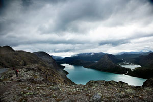
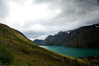
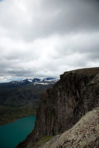
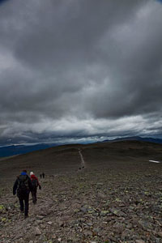

JourneyZone: To the Norwegian mountain wilds
Brief description
JourneyZone will be the weekend following JavaZone - 10th-12th of September
The Journey of the Norwegian Wilds is the very first collective post-activity in the JavaZone history. Every year we know of a few speakers both from Norway and abroad meet to enjoy Norway's wild nature after the conference. This year we would like to invite all speakers and members of the JavaZone Committee to explore the wild nature, enjoy the very best of Norwegian food and have a great time together in the weekend following the conference.
The Journey goes across Besseggen, Jotunheimen. We will follow in the footprints of Peer Gynt, a well known character from Henrik Ibsen's drama known by the same name. The main hike is a small challenge, but we will plan alternate routes so that everyone can participate and have a safe and joyful hike.
The walk over Besseggen is one of the most popular mountain hikes in Norway. About 40,000 people walk this trip each year. The route over Besseggen starts at Gjendesheim, up to the trails highest point, Veslfjellet (1,743 m), down the razor-shaped Besseggen, further over the relatively flat area Bandet (at the foot of Besshø). We finally end at Memurubu, where one may take the regularly scheduled ferry route back to Gjendesheim. Many choose to do the hike in the other direction by starting at Memurubu after first taking the ferry there from Gjendesheim. The trip is estimated to take about 5-7 hours without rests.
From Besseggen there is a great view over Gjende and Bessvatnet. One of the unique aspects of the view is that Gjende lies almost 400 m lower than Bessvatnet, and while Bessvatnet has a blue color typical of other lakes, Gjende has a distinct green color. The green color is the result from glacier runoff containing clay (rock flour). Looking down towards Memurubu one can see the nearby river Muru coloring the water with a light colored runoff.
To assure safety this journey is limited to 60 participants. First come, first served. The JavaZone Committee will subsidize the journey with qualified guides to ensure a good experience. Your personal expenses are estimated to be around 1,000 NOK.
Practical information summarized:
- Transport, food, guides and accommodation is arranged
- The Journey will be adjusted for all hiking skill levels
- Departure from Oslo Airport Gardermoen should not be booked before 8PM Sunday September 12th.
- Your personal expenses are estimated to 1,000 NOK
If you would like to read more about Besseggen, visit the links below. More detailed information will be provided closer to the conference. For questions and registration get in touch with us at program@java.no
Historical facts about Besseggen http://en.wikipedia.org/wiki/Besseggen
Route description (English) http://www.visitnorway.com/en/Product/?pid=73931
Route description (Norwegian Trekking Association)
http://turistforeningen.no/trip.php?tp_id=204
Best Regards,
The JavaZone Committee


{kind=link}
{kind=link}
{kind=link}
{kind=link}
{kind=link}
{kind=link}